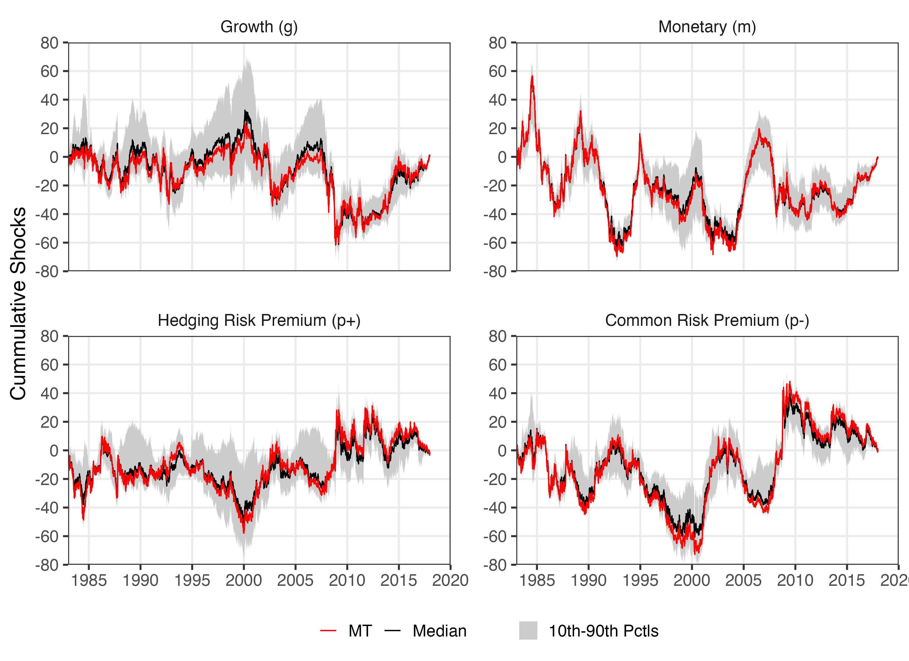

Original Paper Citiation
Anna Cieslak, Hao Pang. “Common shocks in stocks and bonds”. Journal of Financial Economics, Volume 142, Issue 2, 2021, Pages 880-904. https://doi.org/10.1016/j.jfineco.2021.06.008.
Github Project
Description
Their paper identifies 4 diffent shocks (growth, monetary, hedging risk premium, common risk premium) by using sign restricted SVAR on daily data of stock prices and the nominal yield curve. With the shock decomposition in hand they then compare the weight of shocks on different days: FOMC announcement days, macro variable releases, etc.
Result
Results fully replicated, compare the figure below to Figure 1 in their paper.
Replication of Figure 1
